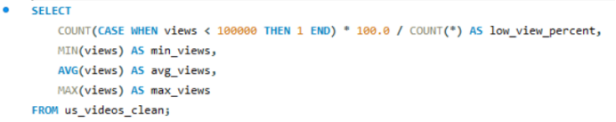
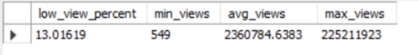
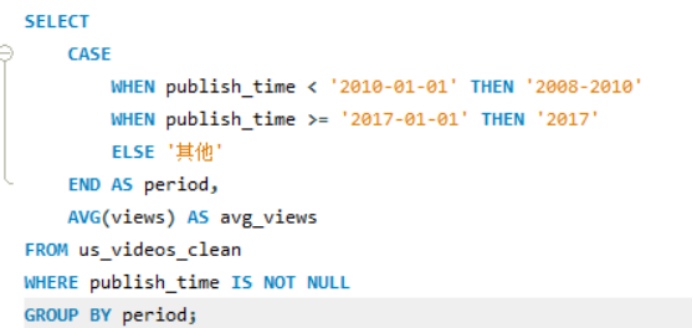
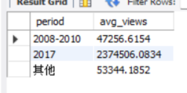
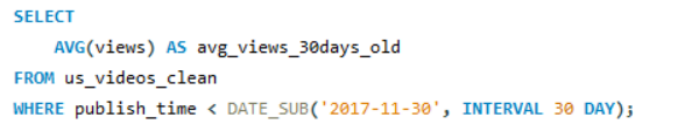
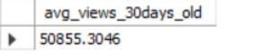
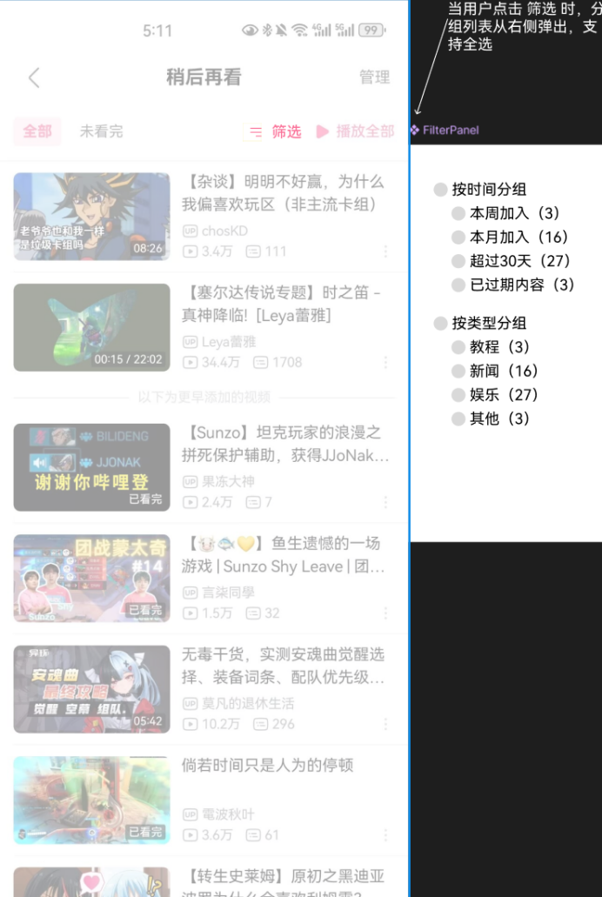
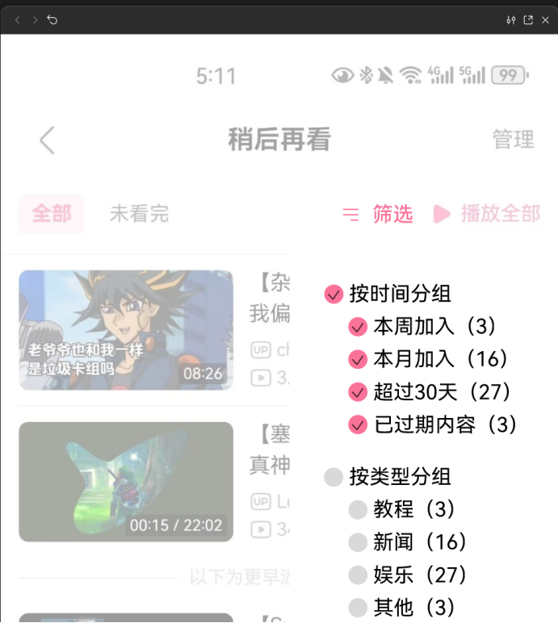
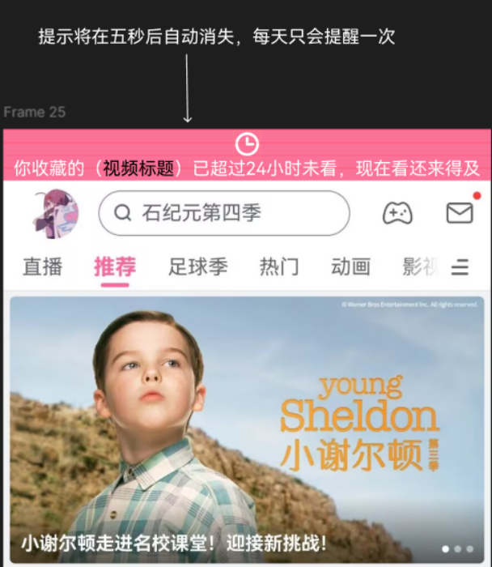

「稍后再看」的核心矛盾不是容量不足，而是视频存在"黄金消费期"—— 发布超过 30 天的视频平均观看量仅 5.1 万，不到整体平均（236 万）的 1/46。 列表积压不是因为用户不愿看，而是因为产品从未在"还来得及"的时候提醒他们。
01 项目摘要
B站「稍后再看」功能存在用户"加而不看"的问题，转化率偏低。 本分析基于 Kaggle YouTube Trending 数据集（4 万+ 视频记录），发现非爆款内容积压、 新闻类内容过期快、老视频观看意愿低等核心问题，据此提出智能回顾、时效性管理和一键清理三项优化方案。 通过降低用户从"收藏"到"观看"的摩擦成本，预计可显著提升「稍后再看」功能的点击转化率与人均观看时长。
02 背景与问题
2.1 功能定位
B站「稍后再看」是核心的跨场景消费管理工具，帮助用户在信息流中快速标记"感兴趣但当下不便观看"的视频， 形成临时消费队列。该功能的设计初衷是降低用户的即时决策压力，提升内容消费的灵活性。
2.2 核心痛点
通过初步用户行为分析发现，该功能存在严重的"加而不看"问题。基于 Kaggle YouTube Trending US 数据集（n=40,949）的分析，观察到以下现象：
用户的内容消费行为呈现强烈的"时效性偏好"。对于被加入"稍后再看"列表的视频， 如果未能及时观看，随着时间推移，用户的观看意愿会急剧下降，导致列表积压和功能失效。
2.3 问题归因
基于上述数据发现，将问题归结为三个核心原因：
| 原因 | 具体表现 | 对产品的要求 |
|---|---|---|
| 无主动提醒机制 | 视频加入"稍后再看"后，系统没有任何主动触达，用户极易遗忘列表中的内容 | 需要一条不打扰的主动触达通道 |
| 列表管理成本高 | 列表采用线性排列，无法按类别或时间筛选，查找特定视频效率低 | 需要分组 / 筛选能力 |
| 缺乏清理动机 | 列表没有"过期"或"积压"的概念，用户没有主动清理的动力，列表越积越厚，最终放弃使用 | 需要给积压内容一个"可见的出口" |
03 数据来源与分析
3.1 数据来源
本分析采用 Kaggle 平台公开的 YouTube Trending US Dataset 作为数据源。 虽然 B站未公开用户行为数据，但 YouTube 与 B站 作为同类型视频平台，其用户内容消费行为具有可迁移性。 数据集包含 40,949 条视频记录，涵盖以下字段：
| 字段 | 说明 |
|---|---|
video_id | 视频唯一标识 |
trending_date | 视频进入热门榜单的日期 |
title | 视频标题 |
channel_title | 频道名称 |
category_id | 视频分类 ID（用于"新闻 / 娱乐 / 教程"分组） |
publish_time | 发布时间（用于时效性分段） |
views | 观看量（核心分析指标） |
likes | 点赞数 |
comment_count | 评论数 |
3.2 分析维度与 SQL 逻辑
维度一：观看量分布分析
为了解"稍后再看"列表中可能被遗忘的视频特征，首先分析观看量的整体分布情况。

分析结果：

| 指标 | 数值 |
|---|---|
| 低观看量视频占比（< 10 万） | 13.0% |
| 最小观看量 | 549 次 |
| 平均观看量 | 236 万次 |
| 最大观看量 | 2.25 亿次 |
发现超过一成视频的观看量不足 10 万，大量视频未能获得有效曝光。这部分视频极有可能被用户"稍后"后遗忘，最终沉没在列表底部。
维度二：发布时间与观看量的关系分析
为了验证"老视频是否会被用户遗忘"的假设，按发布时间分段统计平均观看量。

分析结果：

2017 年新视频的平均观看量（237 万）是 2008–2010 年老视频（4.7 万）的 50 倍以上。 这一巨大差距表明，用户的内容消费呈现强烈的"时效性偏好"——发布时间越久，被观看的概率越低。
维度三：视频"老化"效应验证
进一步分析发布超过 30 天的视频，验证其观看量是否显著低于新视频。

分析结果：

发布超过 30 天的视频，平均观看量仅 5.1 万，远低于整体平均的 236 万。 这意味着，视频在发布后有一个"黄金消费期"，一旦错过，被观看的概率将急剧下降。
04 三项洞察
① 大量视频观看量极低
数据表现：13.0% 的视频观看量低于 10 万，最低仅 549 次。
启示：大量普通内容被加入列表后可能永远不被观看，需要主动触达机制。
② 老视频观看意愿显著下降
数据表现：2008–2010 年发布的视频平均观看量仅 4.7 万，而 2017 年新视频达 237 万，差距超 50 倍。
启示：用户对列表中的老视频缺乏观看意愿，需要降低老视频的管理成本。
③ 视频存在"黄金消费期"
数据表现：发布超过 30 天的视频平均观看量仅 5.1 万，远低于整体平均的 236 万。
启示：视频在发布后有一个黄金消费期，过期后转化率极低，需要在该期间内完成提醒。
05 优化方案
基于第三部分的三项数据洞察，提出对应的三项优化策略：
| 策略 | 对应的数据表现 | 核心动作 |
|---|---|---|
| 策略一 智能回顾提醒 | 13% 的视频观看量低于 10 万，大量内容被加入后石沉大海 | 首页信息流插入「稍后再看」回顾卡片，每周推送一次 |
| 策略二 一键分类清理 | 老视频观看量仅为新视频的 1/50，用户对积压内容缺乏处理意愿 | 列表页增加分类筛选与一键清理 |
| 策略三 时效性内容管理 | 发布超 30 天的视频平均观看量仅 5.1 万，存在"黄金消费期" | 对新闻 / 热点内容做差异化提醒与过期归档 |
5.1 策略一：智能回顾提醒
对应数据表现：13% 的视频观看量低于 10 万，大量内容被加入后石沉大海。
解决方案：在首页信息流中插入"稍后再看"回顾卡片，每周推送一次，精选用户加入但未观看的视频。
功能细节：
- 卡片展示最近一个待看视频
- 视频显示标题、封面、加入天数
- 点击卡片直接跳转到"稍后再看"列表页
- 支持"下次再说"开关，尊重用户意愿
5.2 策略二：一键分类清理
对应数据表现：老视频观看量仅为新视频的 1/50，用户对积压内容缺乏处理意愿。
解决方案：在"稍后再看"列表页增加分类筛选和一键清理功能。


功能细节：
- 按时间分组：本周加入 / 本月加入 / 超过 30 天 / 过期内容
- 按类型分组：教程 / 娱乐 / 新闻 / 其他（基于
category_id映射） - 每个分组右侧显示视频数量，支持一键全选清理
5.3 策略三：时效性内容管理
对应数据表现：发布超过 30 天的视频平均观看量仅 5.1 万，视频存在"黄金消费期"。
解决方案：对有时效性的内容（新闻、热点）做差异化处理，自动识别并提示用户。
功能细节：
- 系统识别
category_id为"新闻"的视频，在加入 24 小时后发送站内提醒 - 提醒文案示例：「你收藏的【视频标题】已超过 24 小时，现在看还来得及」
- 对超过 7 天未看的新闻视频，自动移至"过期内容"分组
- 用户可一键清理所有过期新闻内容

三项策略里，策略三（时效性管理）是唯一会"主动打扰用户"的——站内提醒必须谨慎。
因此我把它限制在两个条件下触发：内容本身是新闻类（category_id 判定），且加入已超过 24 小时。
对时效性弱的内容（教程、娱乐）绝不提醒。宁可少提醒，也不能让用户把这条通道关掉——
提醒通道一旦被用户屏蔽，策略一和策略三就同时失效了。
06 总结与复盘
6.1 项目总结
本项目基于 Kaggle YouTube Trending 公开数据集（n=40,949），通过分析视频观看量分布、发布时间与观看量的关系， 发现 B站「稍后再看」功能存在的核心问题：非爆款内容被大量积压、老视频用户观看意愿低、视频存在"黄金消费期"。 针对以上问题，提出三项优化方案：
- 智能回顾提醒——在首页推送被遗忘的视频；
- 时效性内容管理——对新闻类内容做 24 小时提醒；
- 一键分类清理——降低用户管理积压内容的成本。
6.2 个人成长
- 数据分析能力：使用 SQL 对 4 万+ 条真实数据进行分析，从数据中发现产品问题。
- 产品设计能力：基于数据洞察提出优化方案，并用 Figma 完成高保真原型设计。
- 数据驱动思维：理解了"用数据发现问题 → 用设计解决问题 → 用数据验证效果"的闭环。
6.3 项目不足
本分析使用 YouTube 数据代理 B站 用户行为，存在平台差异带来的外推风险： YouTube 的推荐机制、用户构成与 B站 并不相同，结论的方向性可以借鉴，但具体数值不能直接迁移。 更严谨的做法是同时引入一份国内平台的公开数据做交叉验证——这是我下一步想补的功课。
把三项策略拆成可验证的假设与指标（例如"回顾卡片点击率 ≥ 8%""过期内容 7 日内清理率 ≥ 30%"）， 设计一个两周的 A/B 实验方案，用最小改动先验证策略一。